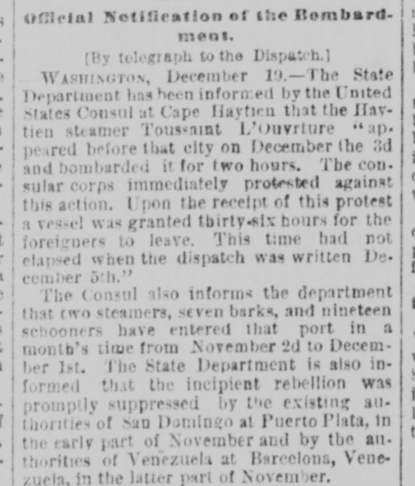
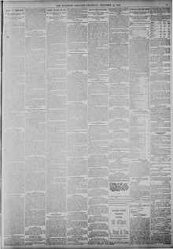

Tien steamer Toussaimt L’Ouvriure ‘ap. peared before that city on DecemberEl vapor Toussaint L'Ouverture apareció ante esa ciudad en diciembre
Richmond Dispatch. Richmond, Va., December 20, 1888. Page 3. View the originalVer el original


See the full pageVer la página completaThe Richmond dispatch reported that the steamer Toussaimt L’Ouvriure bombarded a city for two hours on December 3, prompting a consular protest and a granted thirty-six-hour period for foreigners to leave. The consul also reported on port traffic between November 2 and December 1, while the State Department received information that incipient rebellions were promptly suppressed at Puerto Plata by San Domingo authorities in early November and at Barcelona by Venezuelan authorities in late November.El Richmond dispatch dio cuenta de que el vapor Toussaint L'Ouverture cañoneó una plaza durante dos horas el 3 de diciembre, suscitando la protesta del cuerpo consular y concediéndose un plazo de treinta y seis horas para la evacuación de los súbditos extranjeros. El cónsul informó igualmente acerca del movimiento portuario registrado entre el 2 de noviembre y el 1 de diciembre, en tanto el Departamento de Estado recibió noticias de que sendas rebeliones incipientes fueron sofocadas con presteza en Puerto Plata por las autoridades dominicanas a principios de noviembre y en Barcelona por las fuerzas venezolanas a fines del propio mes.
FULL TEXT:TEXTO COMPLETO:
Official Notification of the Bombardment.Notificación oficial del bombardeo.
[By telegraph to the Dispatch.][Por telégrafo al Dispatch.]
WASHINGTON, December 19.—The State Department has been informed by the United States Consul at Cape Haytien that the Haytien steamer Toussaint L'Ouverture "appeared before that city on December the 3d and bombarded it for two hours. The consular corps immediately protested against this action. Upon the receipt of this protest a vessel was granted thirty-six hours for the foreigners to leave. This time had not elapsed when the dispatch was written December 5th."WASHINGTON, 19 de diciembre.—El Departamento de Estado ha sido informado por el Cónsul de los Estados Unidos en Cabo Haitiano de que el vapor haitiano Toussaint L'Ouverture «apareció ante esa ciudad el 3 de diciembre y la bombardeó por dos horas. El cuerpo consular protestó inmediatamente contra esta acción. Al recibo de esta protesta se concedió a un buque treinta y seis horas para que los extranjeros salieran. Este tiempo no había transcurrido cuando el despacho fue escrito el 5 de diciembre.»
The Consul also informs the department that two steamers, seven barks, and nineteen schooners have entered that port in a month's time from November 2d to December 1st. The State Department is also informed that the incipient rebellion was promptly suppressed by the existing authorities of San Domingo at Puerto Plata, in the early part of November and by the authorities of Venezuela at Barcelona, Venezuela, in the latter part of November.El Cónsul también informa al departamento que dos vapores, siete barcas, y diecinueve goletas han entrado en ese puerto en el tiempo de un mes desde el 2 de noviembre hasta el 1 de diciembre. El Departamento de Estado también es informado de que la incipiente rebelión fue prontamente suprimida por las autoridades existentes de Santo Domingo en Puerto Plata, a principios de noviembre y por las autoridades de Venezuela en Barcelona, Venezuela, en la última parte de noviembre.